Master visual encoding in Matplotlib: understand color theory, hex codes, built-in stylesheets, rcParams configuration, light vs dark themes, colormaps, and accessibility-first data storytelling.
Data visualization mein colours aur styling ka purpose graph ko "khoobsurat" (decorative) banana nahi, balki data ka pattern instantly convey karna hota hai. Agar aap bina soche har bar ya curve ko random rainbow colour de denge, toh reader confuse ho jayega.
Samjhein in teeno terms ka core difference:
#0284c7 ya 'dodgerblue').'ggplot', 'bmh').Aaiye dekhein ek e-commerce monthly revenue dataset par default vs professional styling ka farq:
import matplotlib.pyplot as plt
weeks = ['Week 1', 'Week 2', 'Week 3', 'Week 4', 'Week 5', 'Week 6']
sales_lakhs = [14.2, 17.8, 16.5, 22.4, 26.1, 31.0]
# 1. Unpolished Default Plot
fig, (ax1, ax2) = plt.subplots(1, 2, figsize=(13, 5), dpi=150)
ax1.plot(weeks, sales_lakhs)
ax1.set_title("[Problematic] Raw Default Styling (Unpolished)")
# 2. Professional Styled Plot with Intentional Styling
ax2.plot(weeks, sales_lakhs, color='#0284c7', marker='o', markersize=8,
linewidth=2.5, markerfacecolor='#38bdf8', markeredgecolor='#0369a1',
markeredgewidth=1.8, label='Actual Sales (Lakhs INR)')
ax2.set_title("[Recommended] Professional Styled Chart", fontsize=12, fontweight='bold', pad=12, color='#0f172a')
ax2.set_xlabel("Academic / Fiscal Timeline", fontsize=10, fontweight='bold', labelpad=8, color='#334155')
ax2.set_ylabel("Turnover (Lakhs INR ₹)", fontsize=10, fontweight='bold', labelpad=8, color='#334155')
ax2.grid(True, linestyle='--', alpha=0.5, color='#cbd5e1')
ax2.set_facecolor('#f8fafc')
ax2.legend(frameon=True, facecolor='#ffffff', edgecolor='#cbd5e1', fontsize=9.5)
ax2.spines['top'].set_visible(False)
ax2.spines['right'].set_visible(False)
fig.suptitle("Visual Impact of Styling: Default vs. Thoughtful Polish", fontsize=14, fontweight='bold', y=1.02)
fig.tight_layout()
plt.show()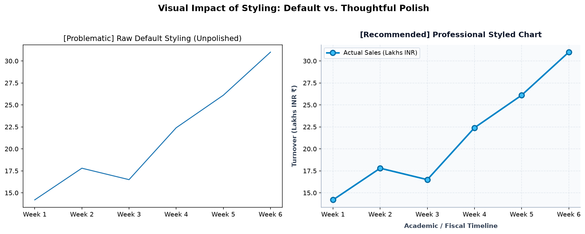
Figure 11.1: Raw default plot (left) has harsh solid lines with no context or grid. Styled version (right) provides readable axes, markers, subtle grid, and soft background.
Matplotlib mein colour define karne ke chaar primary tareeqe hote hain:
| Color Format | Syntax Example | When to Use |
|---|---|---|
| Named Strings | color='dodgerblue', 'coral', 'teal' |
Quick prototyping aur simple educational scripts. |
| Short Codes | 'r', 'b', 'g', 'k' (black), 'w' (white) |
Interactive scratchpad commands. |
| Hexadecimal Codes | color='#0284c7', '#10b981', '#f59e0b' |
Enterprise dashboards, UI-brand consistency, production web apps. |
| RGB / RGBA Tuples | color=(0.1, 0.5, 0.8) or (0.1, 0.5, 0.8, 0.5) |
Algorithmic color computation aur dynamic transparency scaling. |
Named colors casual scripts ke liye theek hain, lekin production mein exact HEX code company guidelines follow karte hain:
import matplotlib.pyplot as plt
days = ['Mon', 'Tue', 'Wed', 'Thu', 'Fri', 'Sat', 'Sun']
study_hours = [3.5, 4.0, 3.8, 5.2, 4.5, 6.0, 5.5]
categories = ['Electronics', 'Fashion', 'Grocery', 'Books', 'Fitness']
revenue = [45, 32, 28, 16, 24]
fig, (ax1, ax2) = plt.subplots(1, 2, figsize=(13, 5), dpi=150)
# Left: Named colors
ax1.plot(days, study_hours, color='dodgerblue', marker='s', markersize=7,
linewidth=2, markeredgecolor='darkblue', label='Study Time (Hours)')
ax1.set_title("Named Colors: 'dodgerblue' & 'darkblue'", fontsize=11, fontweight='bold', pad=10)
ax1.set_xlabel("Days of Week", labelpad=6)
ax1.set_ylabel("Hours Studied", labelpad=6)
ax1.grid(True, linestyle=':', alpha=0.6, color='gray')
ax1.legend()
# Right: Hexadecimal palette
hex_colors = ['#0284c7', '#059669', '#d97706', '#7c3aed', '#db2777']
bars = ax2.bar(categories, revenue, color=hex_colors, edgecolor='#1e293b', linewidth=1.2)
ax2.set_title("Hexadecimal Colors (#0284c7, #059669, ...)", fontsize=11, fontweight='bold', pad=10)
ax2.set_xlabel("Retail Categories", labelpad=6)
ax2.set_ylabel("Revenue (Lakhs ₹)", labelpad=6)
ax2.grid(True, axis='y', linestyle='--', alpha=0.5)
fig.suptitle("Matplotlib Color Specification: Named Strings vs Exact Hex Codes", fontsize=13, fontweight='bold', y=1.02)
fig.tight_layout()
plt.show()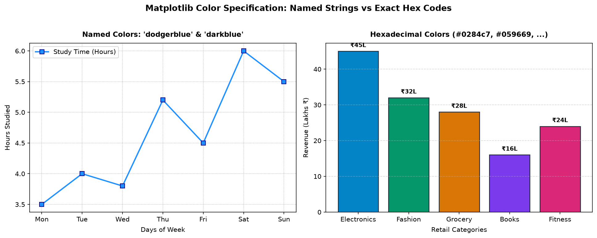
Figure 11.2: Left: named color 'dodgerblue' with 'darkblue' marker edge. Right: distinct branded Hexadecimal colors across product verticals.
Matplotlib aapko har visual component ko micro-level par customize karne deta hai:
color: Primary stroke ya fill colour.marker: Data points ka shape (e.g. 'o' circle, 's' square, '^' triangle, 'D' diamond).markersize: Marker ka size (points mein).markerfacecolor: Marker ke andar ka fill colour.markeredgecolor: Marker ki boundary ka outline colour.markeredgewidth: Marker outline border ki thickness.linestyle: Solid ('-'), Dashed ('--'), Dotted (':'), Dash-dot ('-.').linewidth: Line thickness points mein.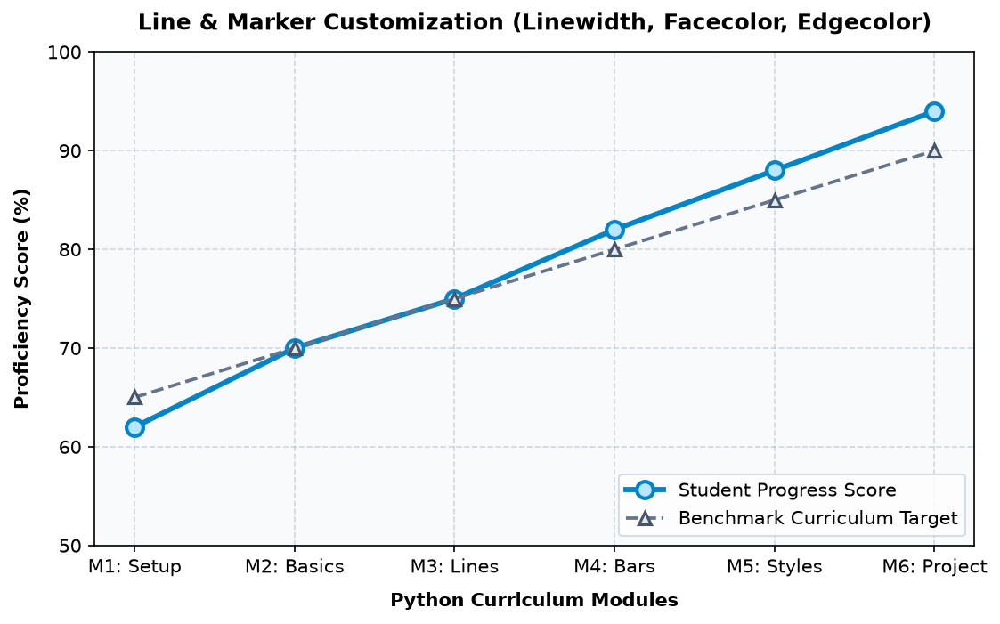
Figure 11.3: Weekly student progress vs curriculum target. Marker facecolor, markeredgecolor, and distinct linestyles make both series immediately recognizable.
Beginners aksar categorical bar charts mein 5 alag bright colours bina kisi reason ke use kar dete hain (red, yellow, green, pink, violet). Isse reader ka dimaag search karne lagta hai ki "Red ka kya matlab hai? Kya yeh negative hai?"
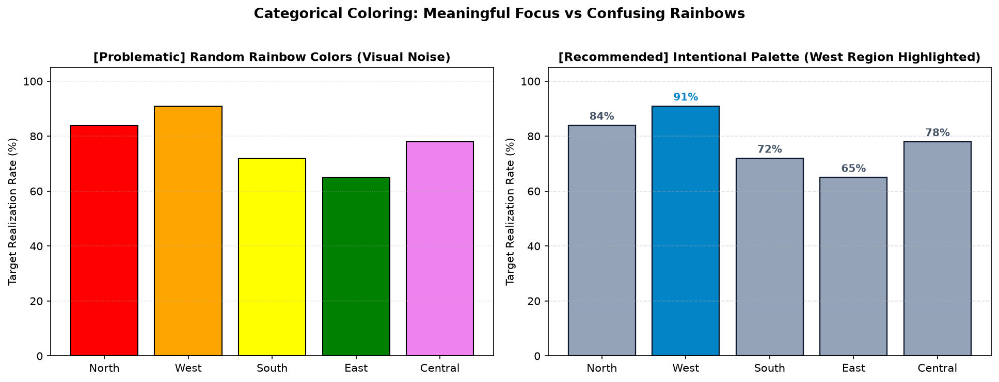
Figure 11.4: Left: random rainbow colors confuse readers. Right: neutral slate bars with one accent blue color instantly highlights the top-performing West region.
#94a3b8) for baseline categories, and reserve a vibrant brand color (like #0284c7) exclusively for the key category you want to highlight!
Aksar beginners Figure background aur Axes background mein confuse hote hain:
fig.patch.set_facecolor('#e2e8f0')).ax.set_facecolor('#ffffff')).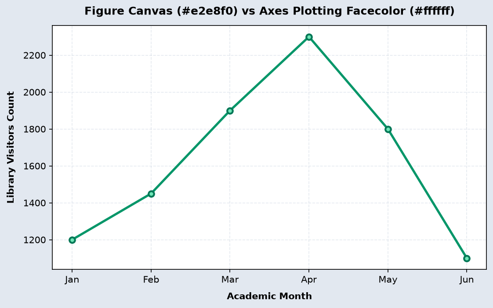
Figure 11.5: Distinct Figure canvas (#e2e8f0) enclosing a pure white plotting Axes area (#ffffff). Notice how contrast frames the visualization cleanly.
Agar aap OLED screens ya night dashboards ke liye dark background use kar rahe hain, toh aapko text, ticks, aur grid colours ko consciously calibrate karna hoga:
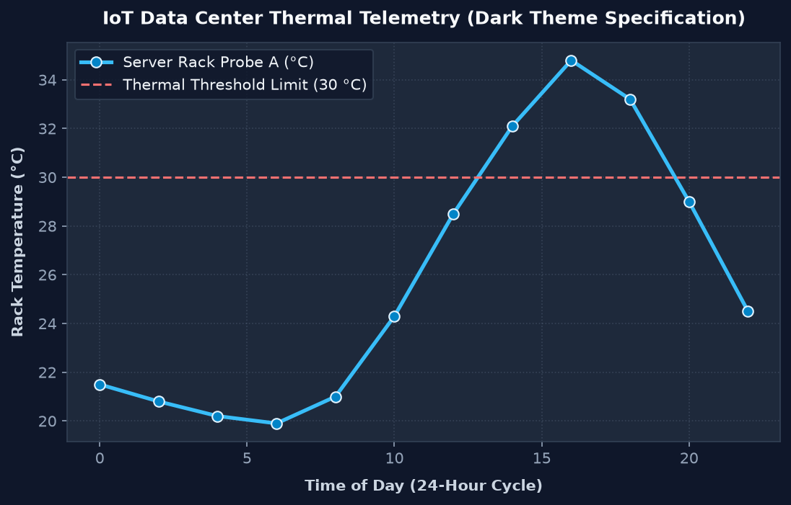
Figure 11.6: Dark-mode IoT server temperature telemetry on Deep Slate (#0f172a). Text is set to #f8fafc, spines to #334155, and grid to soft alpha #64748b.
Parameter alpha float value leta hai from 0.0 (completely invisible) to 1.0 (completely solid/opaque). Iska sabse powerful use hota hai overlapping distributions aur density plots mein:
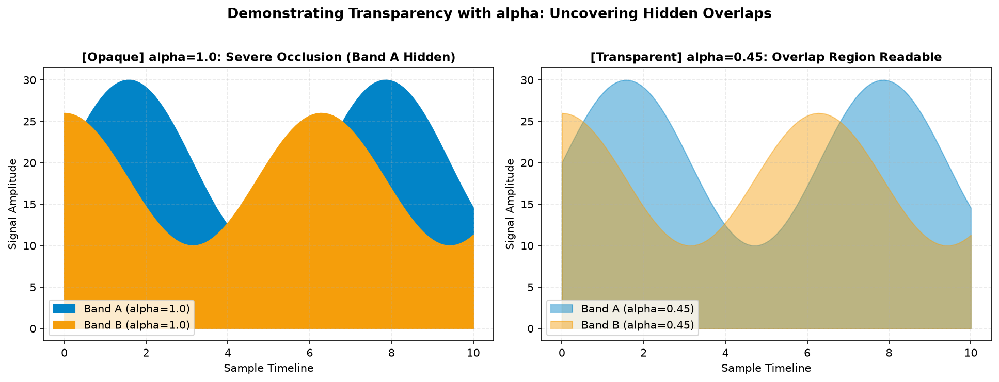
Figure 11.7: Left: with alpha=1.0, Band B completely occludes Band A underneath. Right: with alpha=0.45, both signals and their intersecting region are crystal clear.
alpha ko bohot zyada low (e.g. alpha=0.1) na karein, warna print ya low-contrast mobile screens par data wash-out ho jayega aur dikhega hi nahi! Ideal range for overlapping fills is 0.35 to 0.60.
Matplotlib ke paas ready-made professionally curated stylesheets hote hain. Aap unhe plt.style.available se list kar sakte hain aur plt.style.use('style_name') se activate kar sakte hain.
Aapke current system environment mein verified styles include: 'ggplot', 'bmh', 'Solarize_Light2', 'fivethirtyeight', 'seaborn-v0_8', aur 'dark_background'.
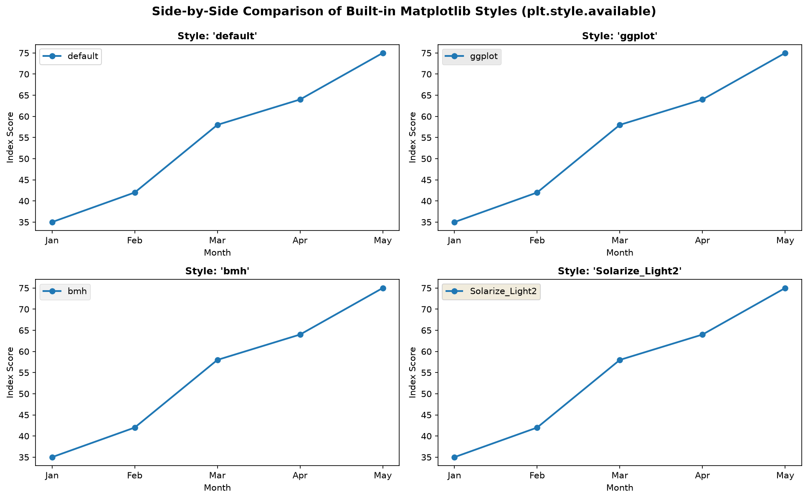
Figure 11.8: The same exact metric plotted under 4 distinct built-in styles: 'default', 'ggplot', 'bmh', and 'Solarize_Light2'. Notice how grids, colors, and fonts shift automatically.
Agar aap script mein plt.style.use('ggplot') call karte hain, toh wo globally pure script ke har aane wale plot ko badal deta hai! Agar aapko sirf ek specific chart ke liye style chahiye, toh Python ka with context manager use kijiye:
# Apply style TEMPORARILY only to this single figure
with plt.style.context('fivethirtyeight'):
fig, ax = plt.subplots(figsize=(7, 4))
ax.plot(months, sales, marker='o')
ax.set_title("Rendered within fivethirtyeight context")
plt.show()
# Bahar aate hi aapka default clean style wapas restore ho jata hai!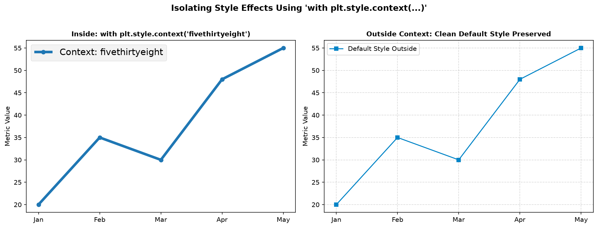
Figure 11.9: Left plot runs inside 'with plt.style.context("fivethirtyeight")'. Right plot runs outside context, completely untouched by global style pollution.
matplotlib.rcParams ek giant configuration dictionary hai jisme Matplotlib ke sabhi default settings stored hote hain. Agar aapko ek multi-page business report ya thesis ke sabhi 20 graphs ka default font, grid, aur line width ek jagah set karna hai, toh rcParams perfect hai:
| rcParam Key | Recommended Production Value | Effect |
|---|---|---|
figure.dpi |
150 |
High resolution sharp graphics on Retina/mobile screens. |
axes.titlesize |
12 (fontweight='bold') |
Consistent title hierarchy across panels. |
axes.grid |
True |
Automatically enables grids on all newly created axes. |
grid.linestyle |
'--' (alpha=0.5) |
Subtle non-intrusive dashed gridlines. |
lines.linewidth |
2.5 |
Bold, readable plot curves. |
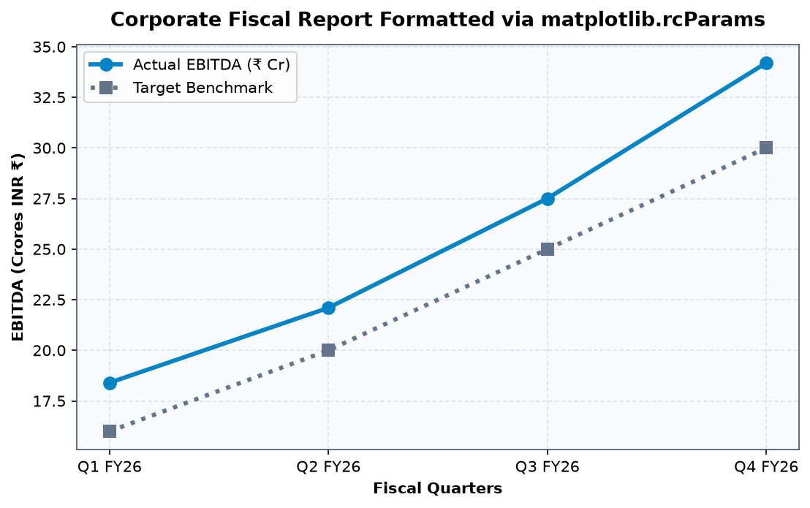
Figure 11.10: Corporate Fiscal Report where default typography, line thickness, and grid parameters were configured once via rcParams dictionary.
plt.rcdefaults() call kar dein taaki agle scripts clean state mein run hon!
Production enterprise codebases mein hardcoded styling har plot function mein baar-baar copy-paste nahi ki jaati. Ek modular theme helper function banaya jaata hai:
def apply_codeverse_theme(ax, title, xlabel, ylabel):
ax.set_facecolor('#ffffff')
ax.set_title(title, fontsize=11.5, fontweight='bold', pad=12, color='#0f172a')
ax.set_xlabel(xlabel, fontsize=9.5, fontweight='bold', labelpad=7, color='#334155')
ax.set_ylabel(ylabel, fontsize=9.5, fontweight='bold', labelpad=7, color='#334155')
ax.grid(True, linestyle='--', alpha=0.45, color='#cbd5e1')
ax.spines['top'].set_visible(False)
ax.spines['right'].set_visible(False)
ax.spines['left'].set_color('#94a3b8')
ax.spines['bottom'].set_color('#94a3b8')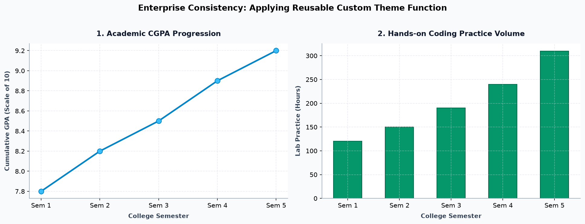
Figure 11.11: Multi-panel dashboard using apply_codeverse_theme(). Notice how both Line and Bar charts share identical padding, font hierarchy, and border styling.
Kabhi bhi student ya business data badalta nahi hai—sirf visual viewing environment badalta hai. Dekhiye bilkul same assessment data jab Light vs Dark theme mein render hota hai:
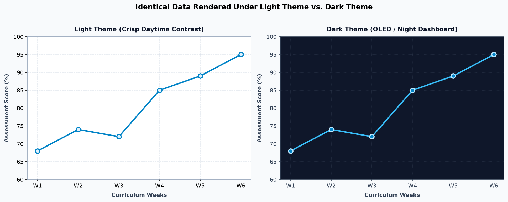
Figure 11.12: Identical curriculum data (68% to 95%). Light theme uses deep blue (#0284c7) on white. Dark theme uses neon cyan (#38bdf8) on slate (#0f172a).
#0284c7, Forest Green #059669).#38bdf8, Mint Green #34d399). Dark colors (jaise navy blue ya black) dark theme mein gayab ho jaate hain!Colours ka selection data ke statistical type par depend karta hai:
| Palette Type | Data Nature | Visual Characteristic | Example Use Case |
|---|---|---|---|
| Categorical (Nominal) | Distinct unordered groups | Different hues with similar perceived brightness | Frontend vs Backend vs DevOps teams |
| Sequential (Numeric/Ordinal) | Ordered progression from low to high | Single hue varying smoothly from light to dark | System risk severity tiers (Low to Critical) |
| Diverging | Data with a meaningful neutral center | Two contrasting hues diverging from a central light grey | Financial profit vs loss (+% to -%) |
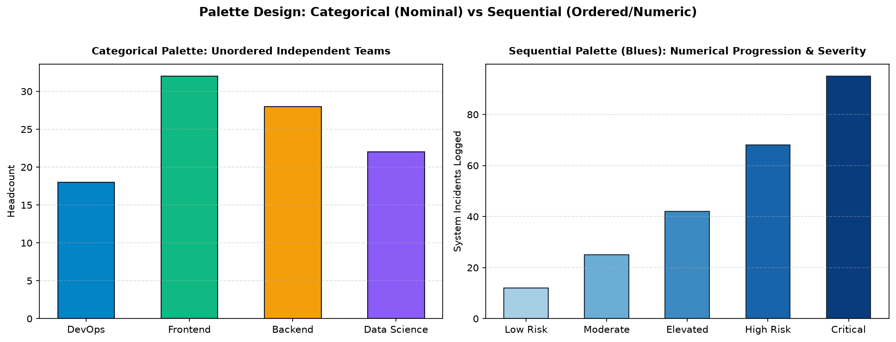
Figure 11.13: Left: categorical palette gives distinct hues to unrelated engineering teams. Right: sequential Blues palette encodes growing severity tiers naturally.
Jab aapke paas 3rd continuous numerical variable ho (jaise Study Hours, Exam Marks, aur sath mein Attendance Percentage), toh aap data point ke colour ko colormap se map karte hain aur sath mein fig.colorbar() display karte hain:
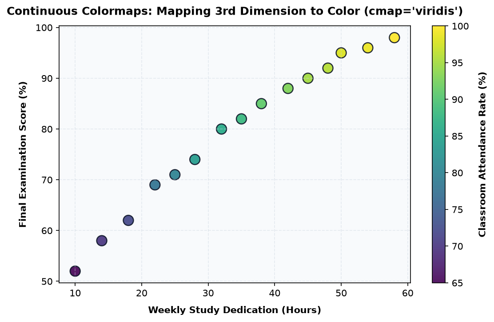
Figure 11.14: 3-dimensional scatter plot. X=Study Hours, Y=Exam Marks, Point Color=Attendance Rate (%) mapped smoothly via cmap='viridis'.
Heatmaps mein colormap har cell ke numerical value ko ek specific intensity shade deta hai:
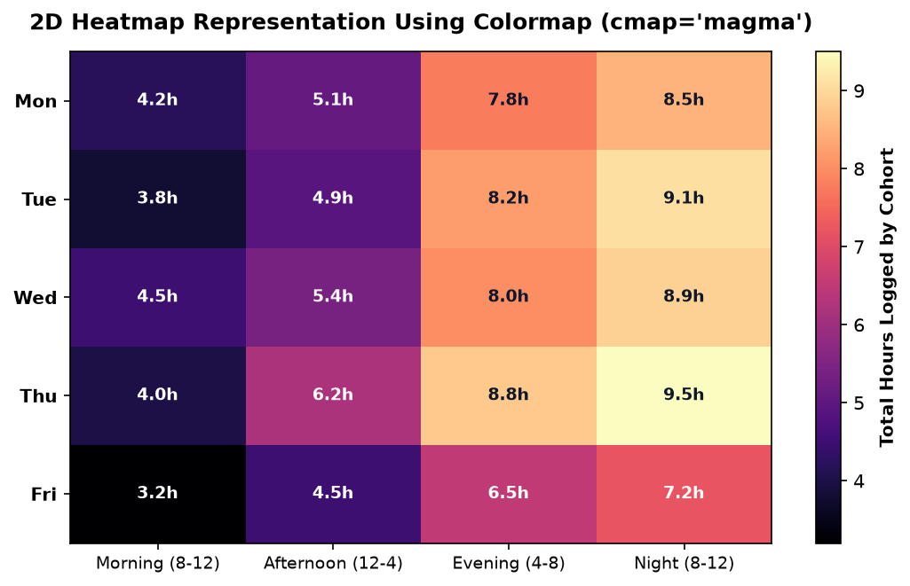
Figure 11.15: 2D Cohort Study Intensity Matrix across days and time slots using cmap='magma'. Numerical values printed inside each cell ensure instant clarity.
Lagbhag 8% males aur 0.5% females kisi na kisi form ki Colour Vision Deficiency (CVD) (jaise Deuteranomaly ya Protanopia—Red-Green colour blindness) face karte hain. Agar aap red line aur green line bina markers ke plot karenge, toh unke liye dono lines identical grey dikhengi!
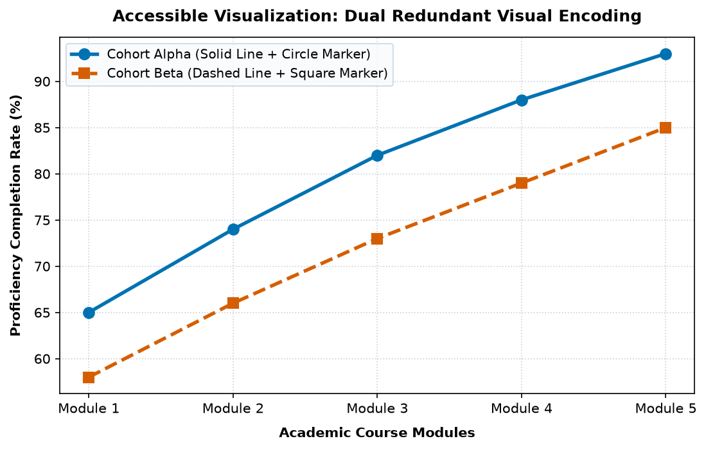
Figure 11.16: Accessible dual series. Cohort Alpha has Blue solid line with circle markers. Cohort Beta has Orange dashed line with square markers. Readable even in greyscale!
Mistake: Har bar ya line ko random bright colour dena.
Fix: Use a cohesive 3-color palette with a single focus hue.
Mistake: Dark background par black text ya dark blue lines.
Fix: Switch text to #f8fafc and lines to vibrant cyan/mint.
Mistake: Solid black grids data points ko obscure karte hain.
Fix: Use soft grey lines: alpha=0.45, linestyle='--'.
Mistake: Red line vs Green line with same solid style.
Fix: Add redundant cues: solid vs dashed, circle vs square markers.
Mistake: plt.style.use() se baad ke charts unintentionally alter hona.
Fix: Use with plt.style.context('...'): for isolated styling.
Mistake: alpha=0.1 jisse graph faded dikhta hai.
Fix: Keep alpha in the legible 0.35–0.60 bracket.
Mistake: Categorical data par sequential colormap lagana.
Fix: Colormaps are strictly for numeric ranges; use discrete lists for categories.
Mistake: Colormap lagana lekin colorbar ke units na batana.
Fix: Always call cbar.set_label('Attendance Rate (%)').
Scenario: College department head ne 6 semesters ka multi-course trajectory (Math vs AI) aur students ke weekly subject study distribution ka coordinated dashboard create kiya:
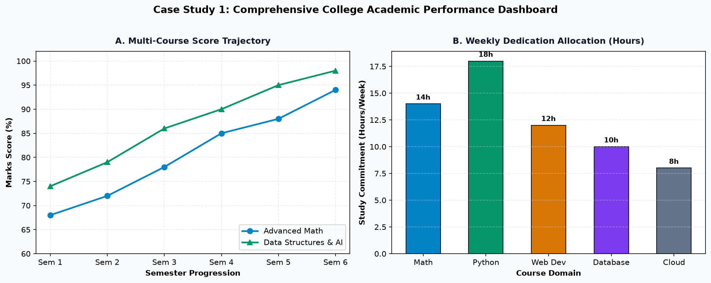
Figure 11.17: Case Study 1. Unified academic styling across Line and Bar panels: coordinated #f8fafc background, clear data labels, and clean sans-serif typography.
Scenario: Ek multi-brand retail platform ne H2 FY26 (July to December) ka revenue analysis kiya, jisme Electronics, Fashion, aur Groceries ke colours dono panels mein strictly synchronized rakhe gaye:
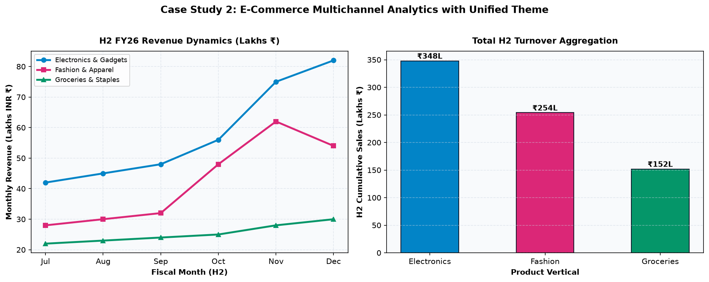
Figure 11.18: Case Study 2. Synchronized palette across line trajectories and total turnover aggregation: Electronics (#0284c7), Fashion (#db2777), Groceries (#059669).
| Styling Approach | Best Used For | Key Advantages | Limitations |
|---|---|---|---|
Direct Parameters (color='#...') |
Individual single plots & quick prototypes | Immediate, explicit, full control of each element | Code duplication agar multiple charts style karne hon |
| plt.style.use() | Jupyter notebooks & stand-alone scripts | One-line professional makeover using curated themes | Global state modify karta hai; baaki plots affect ho sakte hain |
| plt.style.context() | Targeted single-chart styling without side effects | Safely isolates style changes within a Python with block |
Requires indenting the plotting code block |
| matplotlib.rcParams | Large enterprise libraries & multi-page PDF reports | Centralized configuration for DPI, fonts, grids, and sizes | Can be difficult for beginners to remember all dictionary keys |
| Custom Helper Theme | Production web apps, dashboards & team projects | Brand-consistent, 100% modular, flexible parameter overrides | Requires writing and importing helper utility functions |
| Continuous Colormaps | 3D scatter plots, geographic maps & heatmaps | Smoothly encodes continuous numerical gradients | Misleading if applied to unordered categorical groups |
| Function / Method | Essential Arguments | Code Snippet |
|---|---|---|
ax.plot() |
color, linestyle, linewidth, marker, markerfacecolor, markeredgecolor |
ax.plot(x, y, color='#0284c7', marker='o', linewidth=2.5) |
fig.patch.set_facecolor() |
color (Hex or named) |
fig.patch.set_facecolor('#0f172a') |
ax.set_facecolor() |
color |
ax.set_facecolor('#ffffff') |
plt.style.use() |
style_name (from plt.style.available) |
plt.style.use('ggplot') |
plt.style.context() |
style_name |
with plt.style.context('bmh'): ... |
matplotlib.rcParams |
Dictionary key-value pairs | plt.rcParams['axes.grid'] = True |
fig.colorbar() |
mappable, ax |
cbar = fig.colorbar(scatter, ax=ax) |
plt.rcdefaults() |
None | plt.rcdefaults() |
plt.style.use() ki jagah with plt.style.context() prefer karein.fig.patch.set_facecolor() aur ax.set_facecolor() mein kya farq hai?Colours, styles aur themes master karne ke baad agla critical step hai Annotations, Text & Arrows!
Matplotlib Topic 12: Annotations, Text & Arrows mein aap seekhenge:
ax.annotate() aur plt.text() ka deep-dive.